← Index · ← Previous · Next →
Authors: Matthijs Rog, Giacomo Trupiano, Filippo Antola, Mario Cuoco, Giorgio De Simoni, Kaveh Lahabi, Francesco Giazotto
Type: both · Category: other · PDF: https://arxiv.org/pdf/2610.09806v1
Analysis basis: full PDF text, analyzed in chunks
Topic relevance: driven-dissipative phase transition 3/5 · non-equilibrium universality 3/5 · methods for driven-dissipative 2/5 · Keldysh / 2PI / non-Gaussian methods 1/5 · correlated / nonlocal dissipation 1/5 · quantum measurements 1/5
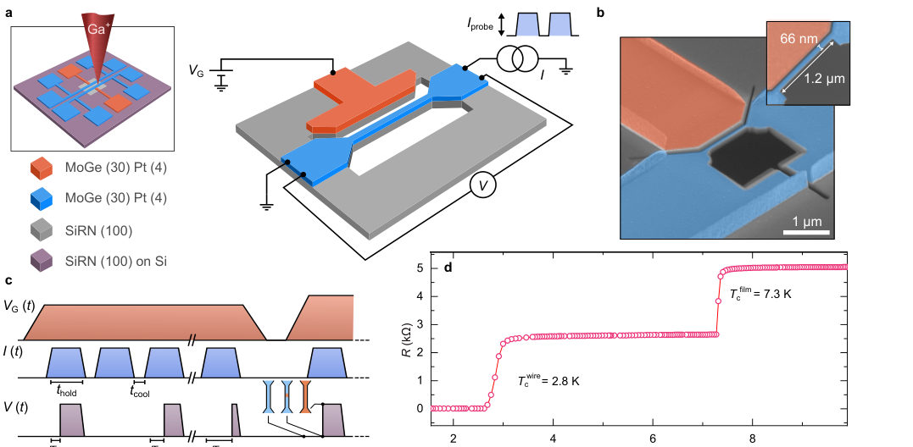
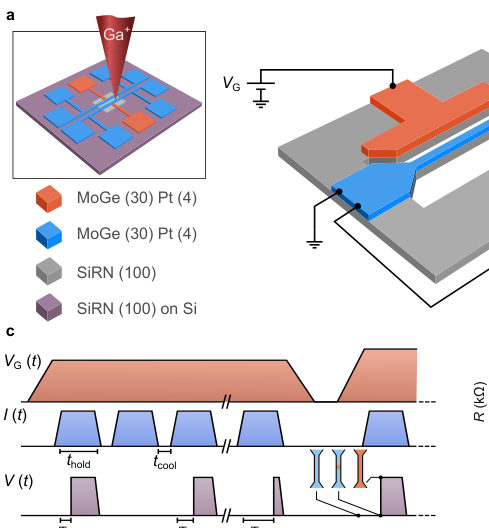
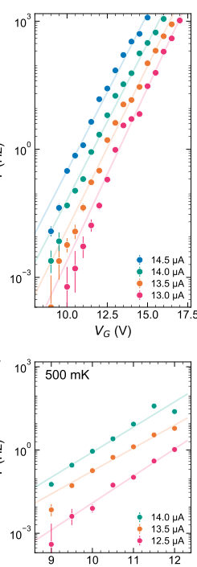
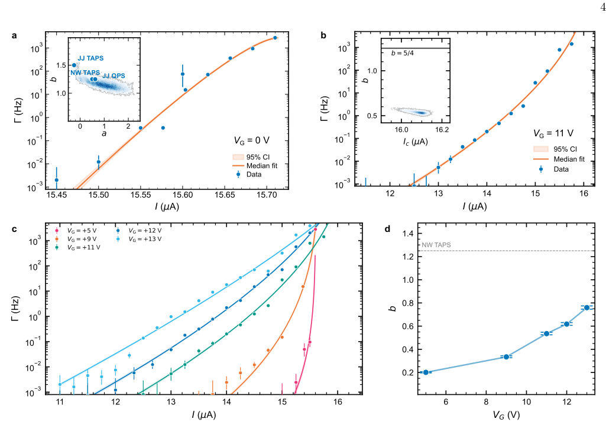
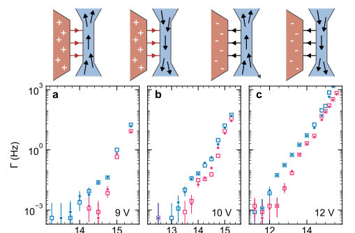
Summary. This work investigates how an external gate voltage controls the switching dynamics (phase slip rate) in a superconducting nanowire by eliminating substrate leakage paths. By measuring the rate and analyzing its dependence on $V_G$, the authors demonstrate a strong, non-trivial, and asymmetric coupling, providing critical guidance for understanding gate-controlled superconductivity mechanisms.
Why it may be interesting. The work provides a clean experimental platform to study non-equilibrium quantum dynamics in superconductors, linking external electrostatic fields directly to the quantum tunneling/activation process governing superconducting failure.
Main problem. To resolve the ambiguity in the Gate-Controlled Superconductivity (GCS) effect—whether critical current quenching is due to the electric field or leakage current—and to study the gate-induced phase slip rate ($\Gamma$).
Main result. The study establishes a clear, non-trivial, and asymmetric connection between the gate voltage and the phase slip rate, suggesting the gate acts directly on the phase-slip free-energy barrier.
Method. The researchers used direct measurement of phase slip escape rates ($\Gamma$) from fixed-bias waiting-time statistics in a fully suspended nanowire geometry, complemented by theoretical fitting using the Langer-Ambegaokar-McCumber-Halperin (LAMH) model.
Model / system. The system is a fully suspended superconducting nanowire of amorphous MoGe, separated from the gate by a vacuum gap, which eliminates substrate-mediated leakage channels. The dynamics are governed by phase slip events, analyzed via the escape rate $\Gamma$.
Key observables. Phase slip escape rate ($\Gamma$) as a function of bias current ($I$) and gate voltage ($V_G$); the evolution of the exponent $b$ in the rate equation.
Important parameters / regimes. Gate voltage ($V_G$), bias current ($I$), temperature ($T$), and the characteristic energy scales defining the phase slip barrier.
Assumptions / limitations. The fully suspended geometry eliminates leakage; the analysis relies on fitting the escape rate to established theoretical forms (like LAMH) while ruling out alternative mechanisms (field emission, strain).
Figures summary. Figures illustrate the device geometry and measurement protocol, showing $\Gamma$ vs. $I$ and $\Gamma$ vs. $V_G$, and detailing the evolution of the fitting exponent $b$ with $V_G$.
Paper structure. The paper first establishes the experimental platform (suspended nanowire) to eliminate leakage. It then measures $\Gamma(V_G)$ and finds an exponential dependence. Subsequent analysis rules out alternative physical mechanisms (field emission, strain) and uses advanced fitting techniques to interpret the non-trivial dependence of $\Gamma$ on $V_G$ and $I$.
A gate voltage can suppress the critical current of a superconducting nanowire, and various scenarios have been proposed to describe these observations. The key difficulty is that these scenarios, including both leakage-driven and field-driven mechanisms, are impossible to disentangle in standard experiments. Here, we resolve this issue by studying a fully suspended superconducting nanowire of amorphous MoGe, separated from the gate by vacuum, eliminating all leakage-driven channels. We measure the phase slip escape rate $Γ$ and find a large gate-induced enhancement of $Γ$, exponential over six orders of magnitude. Fitting various escape-rate models reveals a strong deviation from simple phase slip models, hinting at a complex interaction between the electrostatic field and the phase slip centers. Surprisingly, $Γ$ is not invariant under reversal of the gate-voltage polarity. Our work establishes a clear and nontrivial connection between gate voltage and $Γ$, guiding future research into the origins of the effect.
Authors: Kuniyuki Miwa
Type: theory · Category: other · PDF: https://arxiv.org/pdf/2610.09232v1
Analysis basis: full PDF text, analyzed in chunks
Topic relevance: correlated / nonlocal dissipation 3/5 · interference shaping light 3/5 · Keldysh / 2PI / non-Gaussian methods 2/5 · methods for driven-dissipative 2/5 · analog quantum simulation 1/5
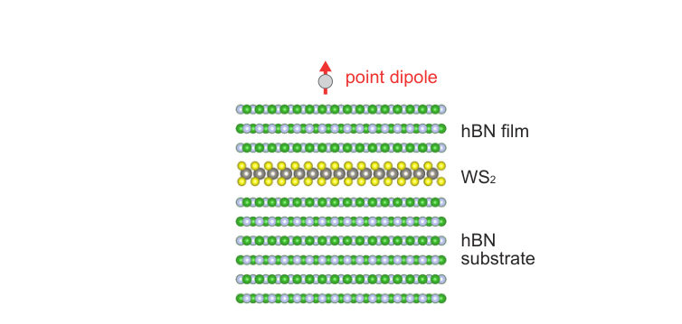
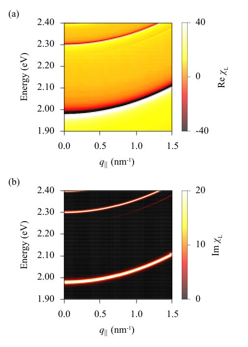
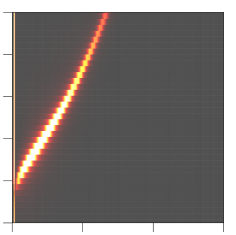
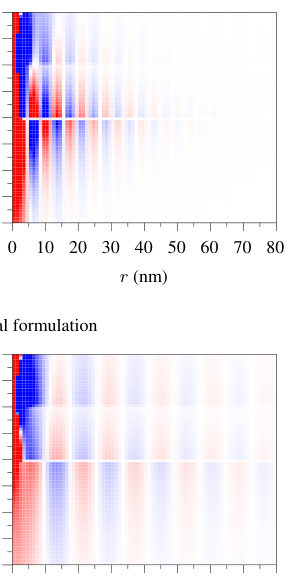
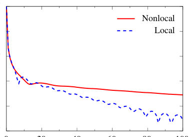
Summary. This paper develops a microscopic theory to model the nonlocal excitonic optical response in monolayer $ ext{WS}_2$ supported by $ ext{hBN}$. By accounting for spatial nonlocality, the authors show that the resulting exciton-polariton dispersion shifts to lower wavevectors, enabling smoother near-field light confinement over larger distances. This highlights the critical role of nonlocality in controlling polaritonic behavior in van der Waals heterostructures.
Why it may be interesting. This work provides a rigorous theoretical framework for understanding how spatial nonlocality fundamentally alters the optical properties of excitons in 2D materials, which is crucial for designing advanced nanoscale photonic devices.
Main problem. The central challenge is achieving nanoscale light confinement and long-range propagation for visible-frequency modes in nanophotonics, which requires accounting for spatial nonlocality in the excitonic optical response.
Main result. Incorporating spatial nonlocality shifts the polariton dispersion toward lower in-plane wavevectors, leading to smoother near-field distributions that extend over larger lateral distances while maintaining nanoscale confinement.
Method. The authors developed a microscopic theory by combining a two-band massive Dirac fermion description with a generalized Mott-Wannier treatment to derive a nonlocal electric susceptibility tensor.
Model / system. The study focuses on in-plane exciton-polaritons (IPEPs) supported by monolayer $ ext{WS}_2$ encapsulated by $ ext{hBN}$. The model incorporates the center-of-mass and internal relative motion of excitons.
Key observables. Polariton dispersion relation ($\mathbf{q}_{\|}$), near-field electromagnetic field distribution, and the nonlocal electric susceptibility tensor $\chi_{\mu u}(\mathbf{q}_{|}, \omega)$.
Important parameters / regimes. In-plane wavevectors ($\mathbf{q}_{\|}$), excitation energy, and the thickness of the capping $ ext{hBN}$ layer.
Assumptions / limitations. The local-response approximation breaks down because field variation length scales become comparable to the exciton size, necessitating the nonlocal treatment.
Figures summary. Figure 1 schematically illustrates the $ ext{hBN}$-encapsulated monolayer $ ext{WS}_2$ structure with a point dipole placed above the heterostructure.
Paper structure. The paper follows a theoretical derivation path: establishing the need for nonlocality, deriving the nonlocal susceptibility using combined fermion/Mott-Wannier theory, and finally applying this susceptibility to analyze the resulting polariton dispersion and near-field properties.
Achieving nanoscale light confinement and long-range propagation is a central challenge in nanophotonics, with important implications for controlling molecular photophysical processes and energy transfer. Monolayer transition-metal dichalcogenides (TMDs) support in-plane exciton-polaritons (IPEPs), deeply subwavelength optical modes in the visible range. In this regime, electromagnetic fields vary on length scales comparable to the exciton size, making spatial nonlocality in the excitonic optical response essential. Here, we develop a microscopic theory of the nonlocal excitonic optical response and investigate the near-field properties of IPEPs in hexagonal boron nitride (hBN)-encapsulated monolayer WS$_2$. Combining a two-band massive Dirac fermion description with a generalized Mott-Wannier treatment, we derive a nonlocal electric susceptibility that accounts for both the center-of-mass and internal relative motion of excitons. Spatial nonlocality in the excitonic optical response shifts the polariton dispersion toward lower in-plane wavevectors compared with the results based on the local-response approximation. This reduces high-wavevector contributions and produces smoother near-field distributions that extend over larger lateral distances while retaining nanoscale confinement. Furthermore, at higher excitation energies, multiple exciton-polariton modes contribute at distinct wavevectors, and their relative contributions can be tuned by varying the thickness of the capping hBN layer. These insights elucidate the fundamental role of spatial nonlocality in the polaritonic properties of van der Waals heterostructures.
Authors: Martin Jindra, Luka Pirker, Tim Verhagen, Ciarán Fowley, Martin Kalbáč, Matěj Velický, † Riichiro Saito, Ado Jorio, Otakar Frank
Type: experiment · Category: statistical mechanics · PDF: https://arxiv.org/pdf/2610.10159v1
Analysis basis: full PDF text, analyzed in chunks
Topic relevance: non-equilibrium universality 3/5 · Keldysh / 2PI / non-Gaussian methods 1/5 · correlated / nonlocal dissipation 1/5 · driven-dissipative phase transition 1/5 · methods for driven-dissipative 1/5 · quantum measurements 1/5
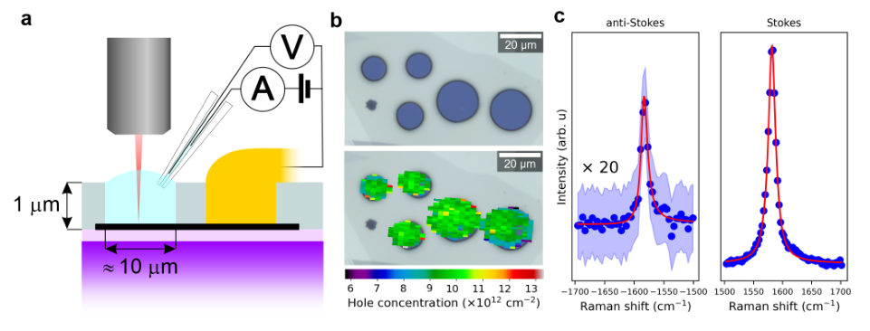
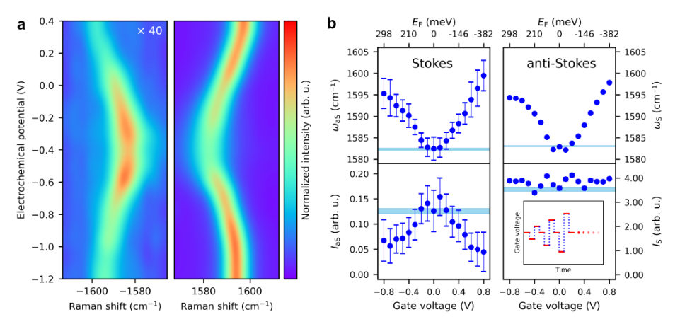
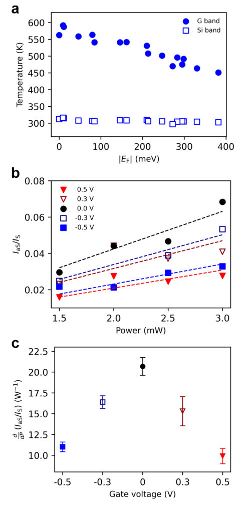
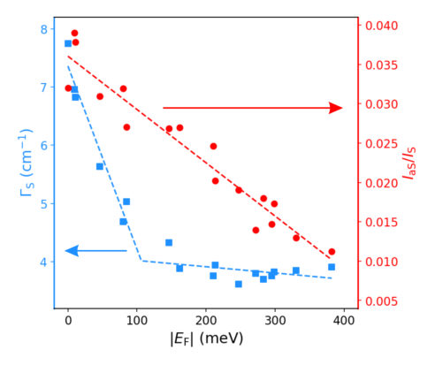
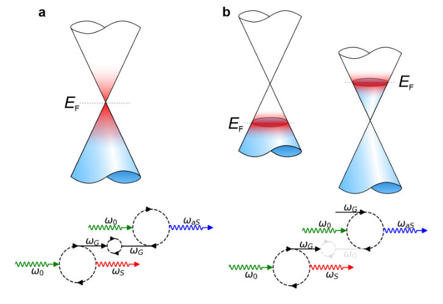
Summary. This paper uses anti-Stokes Raman scattering on graphene to probe non-equilibrium electron-phonon dynamics. By tuning the Fermi level using advanced electrochemical gating, the authors show that the anti-Stokes signal is strongly suppressed away from the Dirac point, contradicting simple thermal models. This establishes the anti-Stokes response as a sensitive diagnostic tool for electronic state-dependent phonon coupling in nanoscale conductors.
Why it may be interesting. This work provides an experimental demonstration of how electronic structure (Fermi level) can fundamentally alter phonon scattering signatures, which is relevant to understanding energy dissipation in quantum devices and open quantum systems.
Main problem. The study addresses the challenge of directly characterizing non-equilibrium electron and phonon populations that govern heat generation and dissipation in nanoscale electronic devices.
Main result. The anti-Stokes Raman response in graphene shows a strong, reversible, and gate-dependent suppression away from the Dirac point, indicating that the scattering process is significantly influenced by the electronic phase space rather than just the equilibrium phonon population.
Method. The researchers utilized anti-Stokes Raman scattering spectroscopy, employing a microdroplet spectroelectrochemical platform combined with dielectric back-gates and chemical doping to tune the Fermi level ($E_F$) in monolayer graphene.
Model / system. The physical system is monolayer graphene, whose electronic and vibrational properties are probed using Raman scattering. The analysis compares the measured anti-Stokes/Stokes intensity ratio against predictions based on equilibrium phonon populations, revealing deviations.
Key observables. Anti-Stokes/Stokes intensity ratio ($I_{aS}/I_S$), G-mode anti-Stokes and Stokes intensities, G-mode frequency and linewidth evolution, and the dependence of these observables on the gate-tuned Fermi level ($E_F$).
Important parameters / regimes. Fermi level ($E_F$), Dirac point (charge neutrality point), excitation power ($P$), and gate voltage ($V_G$).
Assumptions / limitations. The standard interpretation of the anti-Stokes/Stokes ratio as a measure of lattice temperature is challenged by the observed gate-dependent deviations, suggesting a necessary inclusion of electronic contributions.
Figures summary. Figures show gate-dependent heatmaps of G bands, the breakdown of the standard thermometry interpretation, and the power dependence of the anti-Stokes/Stokes ratio, all demonstrating strong electronic control over the scattering signal.
Paper structure. The paper establishes the problem of non-equilibrium characterization, details the experimental setup using advanced gating techniques, presents measurements showing the gate-dependent suppression of $I_{aS}$ while $I_S$ remains stable, and concludes by establishing the anti-Stokes response as a sensitive probe of electron-phonon coupling.
Non-equilibrium electron and phonon populations govern heat generation and dissipation in nanoscale devices, yet their direct characterization remains challenging. Anti-Stokes Raman scattering provides a sensitive probe of phonon populations and local temperatures, although its interpretation becomes more complex when electronic and phononic populations are driven out of equilibrium. Here, we investigate the gate-dependent anti-Stokes Raman response of monolayer graphene and find that the anti-Stokes response deviates from that expected from an equilibrium phonon population. Using a spatially localized microdroplet spectroelectrochemical platform, dielectric back-gates, and chemical doping, we observe a strong and reversible suppression of the G-mode anti-Stokes intensity as the Fermi level is tuned away from the Dirac point, while the Stokes intensity remains essentially unchanged. By contrast, the G-mode frequency and linewidth of both the Stokes and anti-Stokes branches evolve with doping as expected from the established Kohn-anomaly picture. The anti-Stokes/Stokes intensity ratio decreases by several-fold over the measured range and displays a pronounced, gate-dependent power response with maximum sensitivity at charge neutrality. Comparison with previous studies of non-equilibrium carrier dynamics in doped graphene suggests an important role of Fermi-level-dependent electronic phase space, which can influence both hot-carrier-driven phonon populations and electronically mediated Stokes-anti-Stokes scattering. Our findings establish anti-Stokes Raman scattering as a sensitive probe of electron-phonon coupling and non-equilibrium phonon dynamics in graphene.
Authors: Jeswin Jacob, T Toney Fernandez, Dale Otten, Ori Henderson-Sapir, 3 Karen Privat, David Lancaster
Type: experiment · Category: other · PDF: https://arxiv.org/pdf/2610.09435v1
Analysis basis: full PDF text, analyzed in chunks
Topic relevance: quantum optics experiment 3/5 · QC/QI experiment 1/5 · interference shaping light 1/5 · superradiant laser 1/5
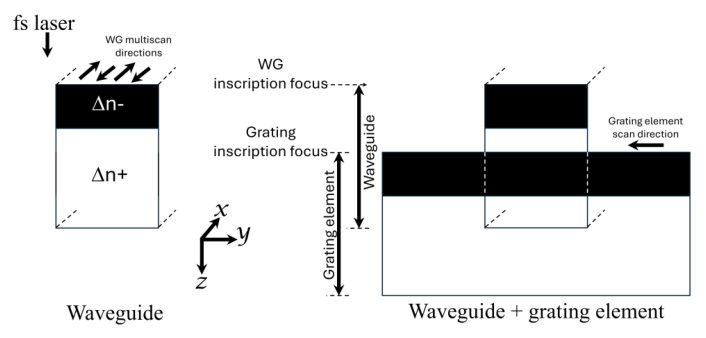
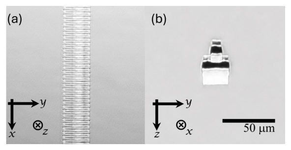
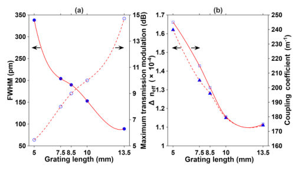
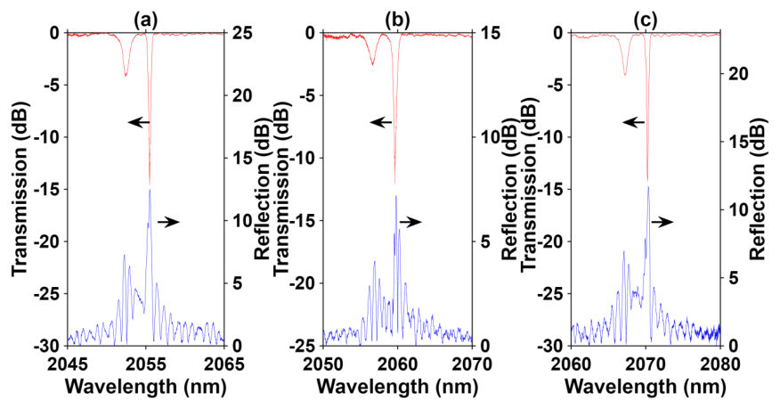
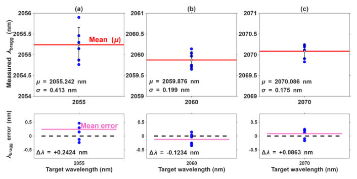
Summary. This paper reports the creation of a highly compact, integrated, and alignment-free single-frequency laser source operating in the mid-infrared using $ ext{Ho}^{3+}$-doped fluoride glass. By integrating femtosecond laser-written waveguides and Bragg gratings, the authors achieved stable lasing at $2062.21 ext{ nm}$ with excellent spectral purity and linear polarization. This platform offers a robust alternative to traditional bulk laser sources for quantum applications.
Why it may be interesting. This work represents an advanced demonstration of integrated photonics in the mid-IR, which is crucial for quantum sensing and quantum communication applications that require stable, compact sources.
Main problem. The primary goal was to develop a compact, fully integrated, alignment-free, and linearly polarized single-frequency laser source operating in the mid-infrared using $ ext{Ho}^{3+}$-doped fluoride glass.
Main result. The authors successfully demonstrated stable single-frequency lasing at $2062.21 ext{ nm}$ with a narrow linewidth ($< 5 ext{ MHz}$) and confirmed linear polarization, all within a compact, integrated chip architecture.
Method. The system was fabricated by inscribing waveguides and waveguide Bragg gratings (WBGs) into fluoride glass using a femtosecond laser, followed by characterization of lasing performance and polarization state.
Model / system. The physical system is an $ ext{Ho}^{3+}$-doped fluoride glass waveguide laser cavity. The cavity is formed by integrating a femtosecond laser-inscribed waveguide and a WBG, creating a compact, chip-scale resonator.
Key observables. Lasing wavelength ($2062.21 ext{ nm}$), linewidth ($< 5 ext{ MHz}$), polarization state (linear), spectral bandwidth ($ ext{FWHM}$), and coupling coefficient ($\kappa$).
Important parameters / regimes. Mid-infrared range ($\sim 2 \mu ext{m}$), waveguide width ($\approx 9 \mu ext{m}$), and grating lengths ($5 ext{ to } 13.5 ext{ mm}$).
Assumptions / limitations. The alignment-free nature is attributed to the butt-coupling of the pump light via the PR grating, and polarization selectivity is hypothesized to arise from form birefringence or polarization-dependent scattering losses.
Figures summary. Figures illustrate the physical setup (waveguide/grating placement), spectral measurements (transmission/reflection of gratings), and time-domain measurements showing stable lasing output and polarization analysis.
Paper structure. The paper details the fabrication process using femtosecond laser inscription, characterizes the resulting Bragg grating resonances, demonstrates stable single-frequency lasing, and investigates the underlying physics governing polarization selectivity.
We report, for the first time, a fully integrated Ho$^{3+}$-doped fluoride glass waveguide laser incorporating a femtosecond laser-inscribed waveguide and waveguide Bragg grating. The compact 12.4 mm cavity achieves stable single-frequency lasing at 2062.21 nm with a line width of better than 5 MHz. The laser emits linearly polarized light, which is efficiently delivered through an SM1950 single-mode fiber. This alignment-free architecture provides a compact and robust platform for integrated mid-infrared single-frequency laser sources.
Authors: Quentin Stein, Sidhartha Nayak, Song Jiang, Jakob Kuhlke, Michelangelo Romeo, Thomas Frederiksen, Fabrice Scheurer, Katharina Kaiser, Tomas Neuman, Guillaume Schull
Type: both · Category: other · PDF: https://arxiv.org/pdf/2610.09149v1
Analysis basis: full PDF text, analyzed in chunks
Topic relevance: analog quantum simulation 3/5 · Frenkel-Kontorova 1/5 · driven-dissipative phase transition 1/5 · quantum measurements 1/5
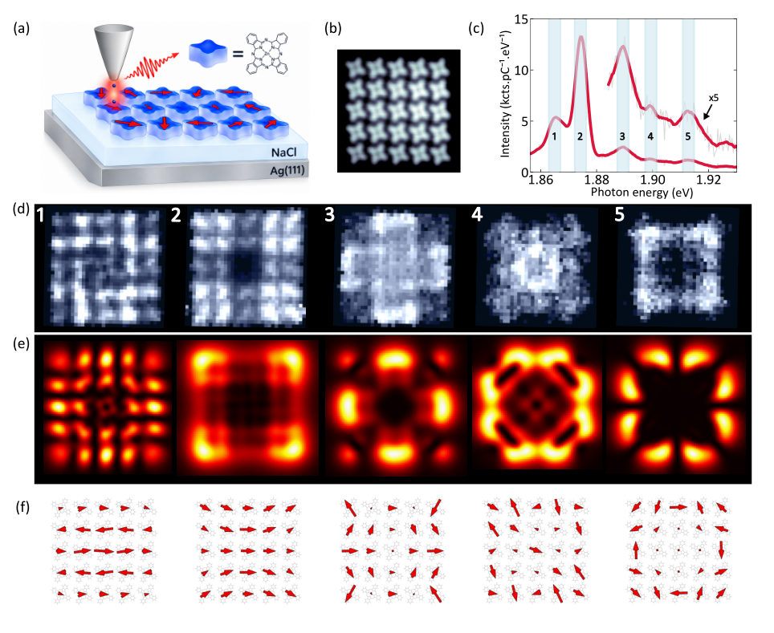
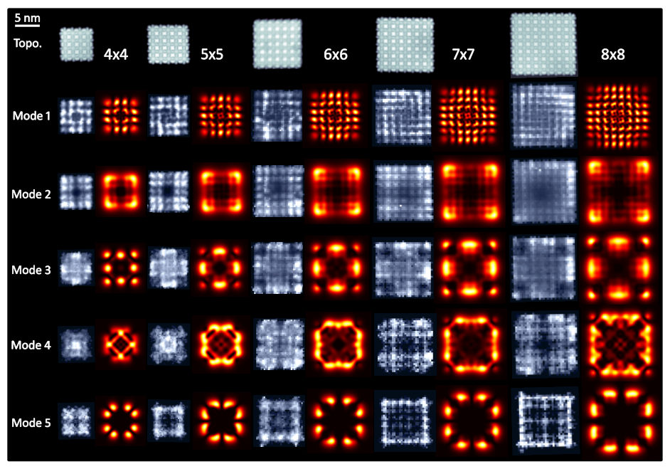
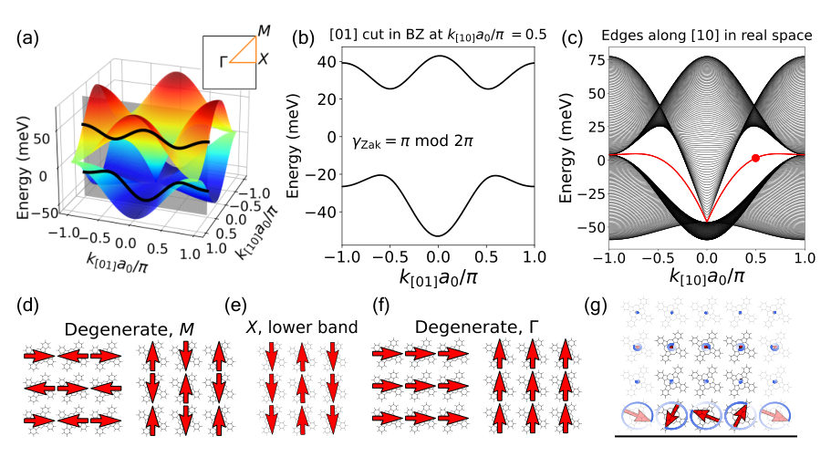
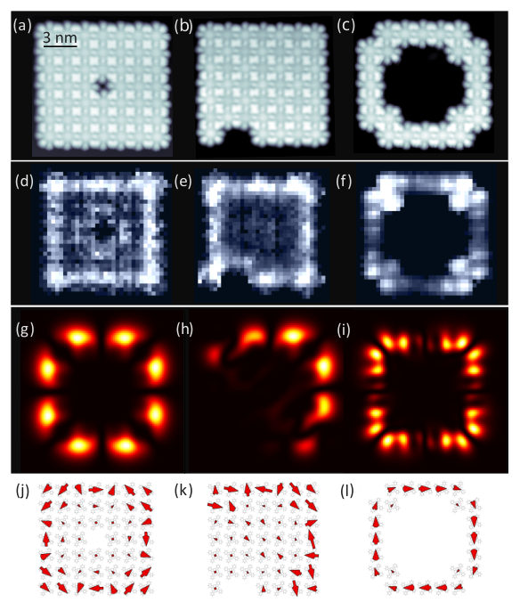
Summary. This paper investigates energy transport in 2D molecular crystals by linking excitonic band topology to physical observables. Using STML, the authors image excitons and demonstrate that edge-confined states, predicted by non-trivial band topology, can be directly resolved. This establishes molecular crystals as a viable platform for engineering directional energy flow.
Why it may be interesting. This work directly bridges condensed matter theory (band topology) with experimental quantum optics/spectroscopy (STML), providing a tangible platform for studying coherent energy transfer in molecular systems, which is highly relevant to AMO physics and quantum light-matter interaction.
Main problem. The study aims to determine if the topological features inherent in the excitonic band structure of molecular crystals can generate robust, edge-confined states that facilitate directional energy transport.
Main result. The researchers successfully imaged and theoretically confirmed the existence of edge-confined excitonic states in 2D molecular crystals, demonstrating that molecular crystals can be engineered for controlled energy flow.
Method. The work combines experimental imaging using Scanning Tunneling Microscopy-induced Luminescence (STML) with theoretical modeling based on a Frenkel-exciton Hamiltonian.
Model / system. The physical system is 2D molecular crystals (e.g., zinc phthalocyanine) hosting Frenkel excitons. The model uses a Hamiltonian describing coherent excitonic coupling, with calculations relying on TDDFT to derive transition charge densities.
Key observables. Real-space wavefunctions of excitonic states, spectral features in STML maps, and the identification of edge-localized states linked to non-trivial band topology (Zak phase).
Important parameters / regimes. Cluster size ($N imes N$), energy eigenvalues ($\Delta E_i$), and the coupling strength derived from dipole-dipole interactions.
Assumptions / limitations. The analysis assumes coupling is dominated by dipole-dipole interactions, and that the system can be modeled by restricting the Hamiltonian to the single-excitation subspace.
Figures summary. Figures illustrate the experimental setup, STM topographies, and STML spectra, alongside theoretical simulations showing the evolution of excitonic bands from discrete to collective modes, and the spatial mapping of edge states.
Paper structure. The paper progresses from establishing the physical problem and experimental technique (STML imaging) to developing the theoretical model (Hamiltonian/TDDFT), and finally demonstrating the key finding: the observation and theoretical confirmation of topologically protected edge states.
Collective molecular excitations govern energy transport in light-harvesting and optoelectronic materials. Theory predicts that excitonic band topology can generate edge-confined states, offering a route to direct energy flow in molecular systems, yet experimental evidence is lacking. Here we use scanning tunnelling microscopy-induced luminescence to image Frenkel excitons in two-dimensional zinc phthalocyanine molecular crystals with nanometer resolution. By varying cluster size, we observe the transition from discrete quantum-confined excitations to collective excitonic bands and directly resolve their real-space wavefunctions. We identify an excitonic state localized at the crystal perimeter and show, through comparison with microscopic theory, that it originates from the momentum-resolved non-trivial topology of the bulk excitonic bands. Our results establish molecular crystals as a platform for engineering topological excitonic states and provide a strategy for controlling energy transport through excitonic band engineering.
Authors: Hasan Oguz
Type: theory · Category: other · PDF: https://arxiv.org/pdf/2610.09814v1
Analysis basis: full PDF text, analyzed in chunks
Topic relevance: analog quantum simulation 3/5 · Keldysh / 2PI / non-Gaussian methods 1/5 · methods for driven-dissipative 1/5
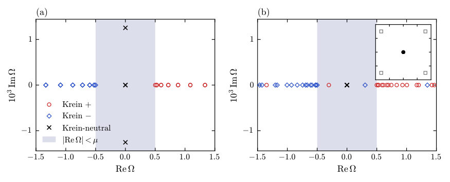
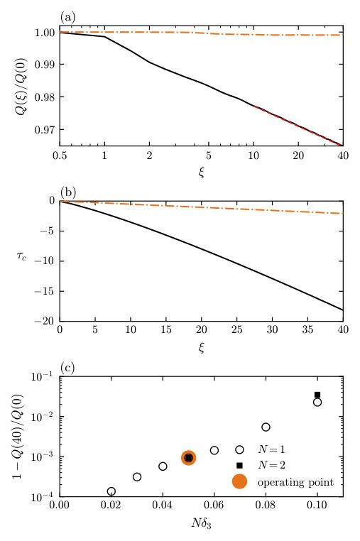
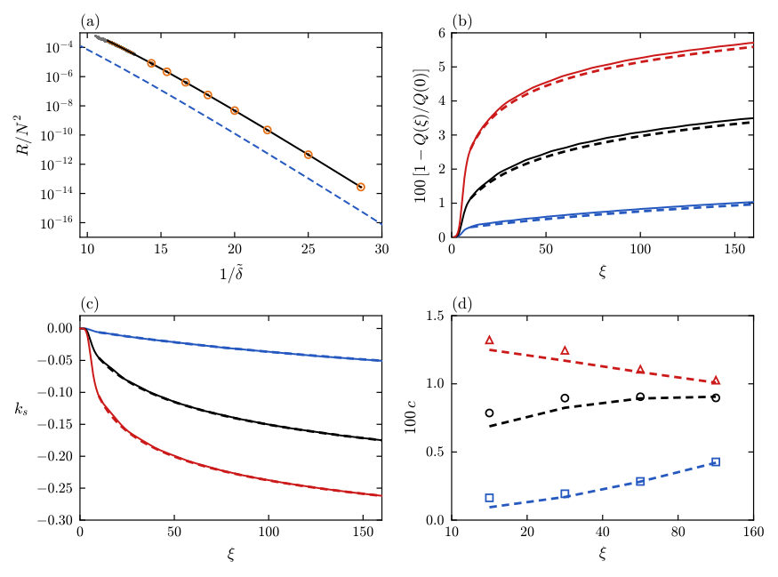
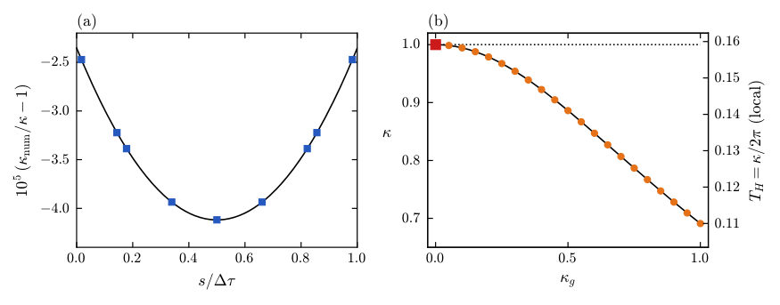
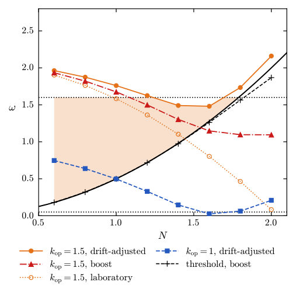
Summary. This paper analyzes solitons in optical systems exhibiting third-order dispersion, treating the system as an analogue for event horizons. The authors compute the Bogoliubov-de Gennes spectrum and measure the Cherenkov radiation emitted by the solitons. The findings show that the radiation rate is much higher than predicted by simple theory, and the results are framed within a kinematic model that treats thermal relations as external inputs.
Why it may be interesting. This work bridges nonlinear optics, quantum field theory in curved spacetime analogues, and soliton dynamics, providing quantitative results on energy loss and spectral properties near an analogue horizon.
Main problem. The paper investigates the properties of solitons in the presence of third-order dispersion, specifically in the context of optical analogues of event horizons.
Main result. The measured Cherenkov emission rate significantly exceeds first-order predictions, and the analysis successfully describes soliton recoil and decay using a kinematic model where thermal relations are treated as imposed inputs.
Method. The study employs Bogoliubov-de Gennes (BdG) spectrum analysis, measures steady Cherenkov emission flux, and develops a kinematic model for the analogue horizon.
Model / system. The system is modeled by the nonlinear Schrödinger equation (GNLSE) in the anomalous-dispersion regime, describing solitons in optical fibers. The analysis linearizes this equation around the stationary state.
Key observables. BdG spectrum (Jordan blocks, negative-energy modes), steady Cherenkov emission rate, soliton recoil, and the surface gravity ($\kappa$).
Important parameters / regimes. Third-order dispersion strength ($\delta_3$), soliton amplitude, and the operating point parameters ($N=1, \delta_3=0.05, \kappa_g=0.3$).
Assumptions / limitations. The thermal relation and entanglement are treated as imposed model inputs, and the analysis is restricted to Raman-free Kerr media.
Figures summary. Figure 1 shows Krein-signed BdG spectra for the soliton, comparing the integrable case ($\delta_3=0$) with the operating value ($\delta_3=0.05$), detailing the zero-mode sector.
Paper structure. The paper proceeds by analyzing the BdG spectrum, quantifying the Cherenkov emission rate from adiabatically prepared solitons, and finally constructing a kinematic model for the analogue horizon to relate surface gravity to soliton properties.
Third-order dispersion turns the soliton of the nonlinear Schrödinger equation, which underlies optical analogues of event horizons in fibers, into a weakly radiating solitary wave. We compute three of its properties without assuming a thermal emission law. First, the linearized (Bogoliubov-de Gennes) problem must be posed about the stationary state of the dispersive equation: linearizing about the integrable profile produces a complex quartet that is converged in grid and box, grows as the square root of the dispersion strength and is spurious. About the stationary state, on a periodic grid, the zero-mode sector consists of two Jordan blocks of size two and the spectrum is real at the operating point, including negative-energy box modes of the resonant branch. Second, we measure the steady Cherenkov emission of adiabatically prepared solitons from the flux of the radiation behind them, over eight decades. The radiation is phase-matched in the frame of the drifting soliton, and the first-order rate falls short of the measured one by factors of 29 to 45. Expressed through a scaled dispersion coefficient of the local soliton, the measured rate describes launched solitons of three amplitudes; with norm and momentum balance, and no further fitted parameter, it reproduces their recoil and the slow decay of their loss rate; at weak dispersion the loss of a launched soliton is the shedding of its launch mismatch. Third, a census of the asymptotic channels shows that long-wavelength upstream emission requires the chemical potential of the soliton, lowered by the comoving-frame Doppler shift of a drifting soliton, to lie inside the analysis band, which bounds the soliton amplitude. In a kinematic model of the flow the surface gravity has a closed form; the thermal relation and the entanglement built on it are imposed inputs of that model. The construction applies to Raman-free Kerr media.
Authors: Dina Sokolova, Davide Costa, Davide Degli Esposti, Tommaso Costanzo, Giordano Scappucci, Georgios Katsaros, Anton V. Bubis
Type: experiment · Category: other · PDF: https://arxiv.org/pdf/2610.08924v1
Analysis basis: full PDF text, analyzed in chunks
Topic relevance: QC/QI experiment 3/5 · quantum measurements 1/5
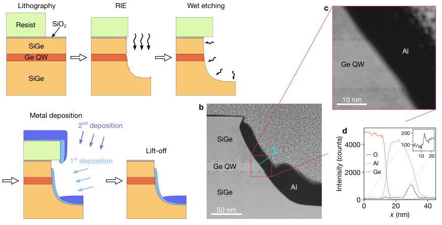
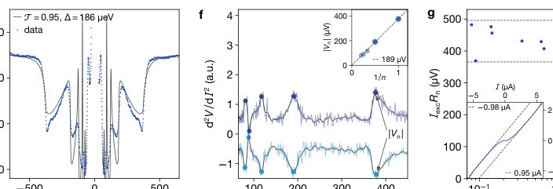
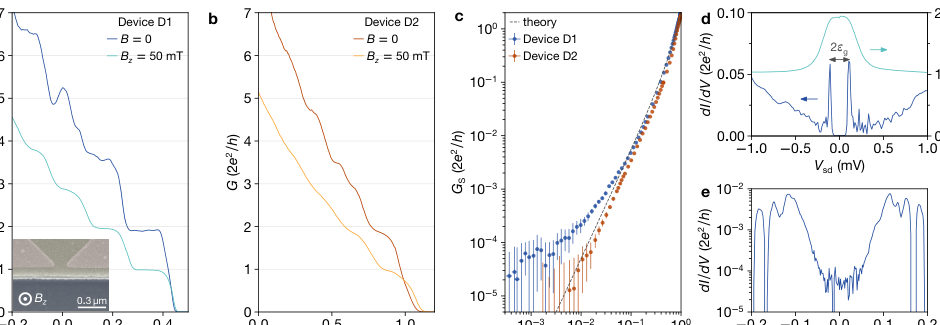
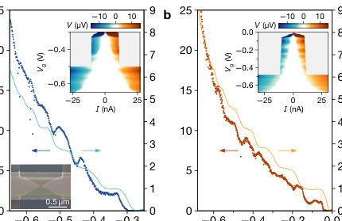
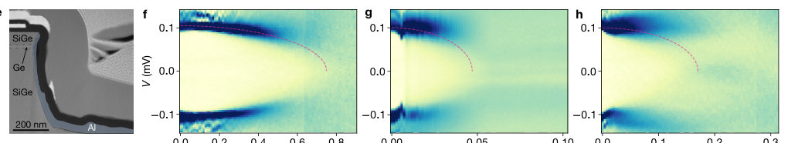
Summary. This work reports a novel, robust fabrication method combining dry and wet etching to create high-quality superconducting edge contacts to buried Ge quantum wells. By achieving near-perfect interface transparency and observing strong Andreev enhancement in quantum point contacts, the authors demonstrate a reliable platform for superconducting hybrid quantum devices.
Why it may be interesting. The study provides experimental evidence of controlled superconducting proximity effects in solid-state heterostructures, which is foundational for building superconducting quantum circuits and quantum devices.
Main problem. The primary challenge addressed is establishing high-quality, reproducible superconducting contacts to deeply buried quantum wells (QWs) within semiconductor-superconductor hybrid systems.
Main result. The combination of anisotropic dry etching followed by gentle wet etching proves to be a robust fabrication strategy, yielding Josephson junctions with near-unity interface transparency and quantum point contacts showing strong Andreev enhancement.
Method. The authors employed an edge-contact fabrication approach, combining dry and wet etching techniques, followed by electrical characterization of Josephson junctions and quantum point contacts.
Model / system. The physical system is a semiconductor-superconductor hybrid structure, specifically involving a buried Germanium (Ge) quantum well contacted by a superconductor (e.g., Al). Measurements probe proximity effects, Andreev bound states, and superconducting transport phenomena.
Key observables. Interface transparency, subgap conductance steps in QPCs (approaching $4e^2/h$), quantized supercurrent, and the length dependence of the $I_{sw}R_n$ product.
Important parameters / regimes. Junction length ($L$), superconducting gap ($\Delta \approx 186-189 \mu ext{eV}$), and the ratio of superconducting to normal conductance ($G_S/G_N$).
Assumptions / limitations. The analysis assumes the short-junction limit for certain theoretical fits, and the success of the wet etch in preserving the geometry defined by the dry etch.
Figures summary. Figures illustrate the combined dry/wet-etch fabrication process, SEM images of junctions, and plots showing $I_{sw}R_n$ vs. length, as well as $I-V$ curves and $G$ vs. $V_g$ measurements.
Paper structure. The paper details the fabrication process (dry/wet etching) to create the contacts, followed by electrical characterization of the resulting Josephson junctions and quantum point contacts to verify high-quality superconducting coupling.
Semiconductor-superconductor hybrid systems form the basis for a broad range of quantum phenomena, such as Andreev bound states, topological superconductivity, and hybrid quantum Hall states. The performance of these hybrid systems can strongly benefit from the exceptional electronic properties of heterostructures with deeply buried quantum wells. However, establishing high-quality superconducting contacts to such quantum wells remains challenging. Here, we address this problem with an edge-contact approach that combines anisotropic dry etching to access the quantum well followed by wet etching for interface preparation. Josephson junctions fabricated using this approach consistently exhibit near-unity interface transparency, while quantum point contacts show strong Andreev enhancement, with the first conductance plateau approaching $4e^2/h$, the limit of perfect Andreev reflection. In superconducting quantum point contacts, the high contact quality is further manifested by quantized supercurrent. These results establish the combination of dry and wet etching as a robust strategy for integrating deeply buried quantum wells into superconducting hybrid devices.
Authors: Bochao Xu, Ian W. Haygood, Kyle Jackman, Coenrad J. Fourie, Pete F. Hopkins, Michael L. Schneider
Type: experiment · Category: other · PDF: https://arxiv.org/pdf/2610.10442v1
Analysis basis: full PDF text, analyzed in chunks
Topic relevance: quantum measurements 3/5
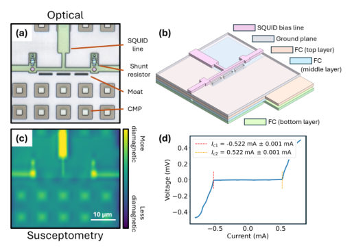
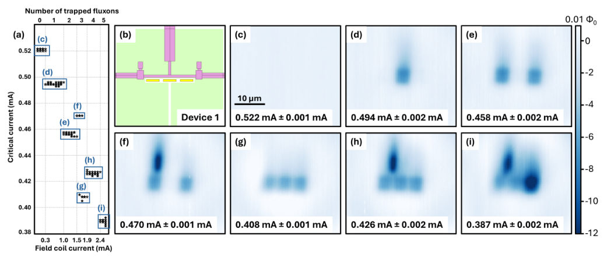
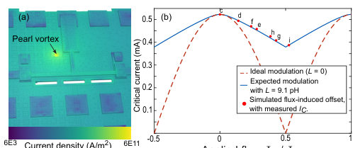
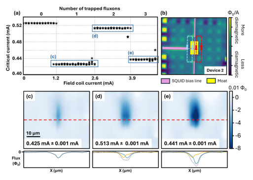
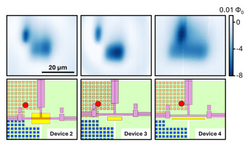
Summary. This work uses Scanning SQUID Microscopy (SSM) to image trapped magnetic flux in superconducting circuits while simultaneously measuring the DC SQUID's electrical performance. By correlating the precise location of trapped vortices with changes in the critical current, the authors prove that flux pinning is governed by specific, reproducible physical sites within the multilayer circuit geometry. This provides crucial feedback for designing robust superconducting quantum devices.
Why it may be interesting. The direct, simultaneous measurement linking microscopic flux pinning sites (from SSM) to macroscopic device performance ($I_c$) is highly valuable for understanding non-equilibrium dynamics in superconducting circuits, which relates to flux quantization and energy landscape mapping.
Main problem. The study aims to directly correlate the location of trapped magnetic flux (vortices) in the ground plane of superconducting circuits with the measured electrical performance of a DC SQUID.
Main result. The research demonstrates that preferential pinning sites for fluxons exist regardless of moat configuration, providing a powerful tool for validating circuit simulation models and guiding physical layout design.
Method. The authors employ Scanning SQUID Microscopy (SSM) to image trapped flux while simultaneously measuring the DC SQUID's critical current ($I_c$) during the same cooldown process.
Model / system. The physical system is a DC SQUID integrated into a multilayer superconducting circuit featuring engineered ground plane 'moats' designed to mitigate residual magnetic flux.
Key observables. DC SQUID critical current ($I_c$), location and number of trapped fluxons/vortices (visualized by SSM).
Important parameters / regimes. Designed zero-field $I_c$ ($\approx 522 \mu ext{A}$), loop inductance ($L = 9.1 ext{pH}$), background flux density ($< 1 \mu ext{T}$).
Assumptions / limitations. The technique assumes that flux trapping can be controlled by cooling in a controlled applied magnetic field, and that the measured $I_c$ can be accurately extracted despite parasitic effects.
Figures summary. Figures show the device structure, the correlation between trapped flux number and measured $I_c$ for multi-moat devices, and simulations illustrating how pinned vortices shift the SQUID's critical current modulation.
Paper structure. The paper progresses by first establishing the methodology of simultaneous SSM imaging and electrical measurement. It then presents detailed results showing how flux trapping affects $I_c$ in multi-moat and single-moat geometries, culminating in a discussion of how local vs. global fields dictate preferred pinning sites.
Holes in the ground planes of superconducting circuits, commonly referred to as moats, are known to be an effective means of mitigating the deleterious effects of residual magnetic flux in superconducting circuits. Previous studies have utilized scanning SQUID microscopy (SSM) to image the effectiveness of various moat geometries and the maximum magnetic fields where they no longer prevent vortices in the ground plane but have not directly correlated the location of flux with circuit performance measurements. In this study we employ SSM to image the effectiveness of various moat configurations in trapping unwanted flux near a DC SQUID, and when the moats are not effective, the location of vortices in the ground plane. During the same cooldown, and without disturbing the circuit, we measure the circuit performance to directly correlate this with the vortex location. We show that there are preferential pinning sites for fluxons regardless of moat configuration, demonstrating the utility of the SSM in provide feedback for circuit layout, modeling, and failure analysis.
Authors: Qinhui Jiang, Jidong Song, Qingyang Mo, Bo Li, Dongyi Wang, Shuang Zhang, Mengyao Li
Type: both · Category: other · PDF: https://arxiv.org/pdf/2610.10376v1
Analysis basis: full PDF text, analyzed in chunks
Topic relevance: analog quantum simulation 3/5
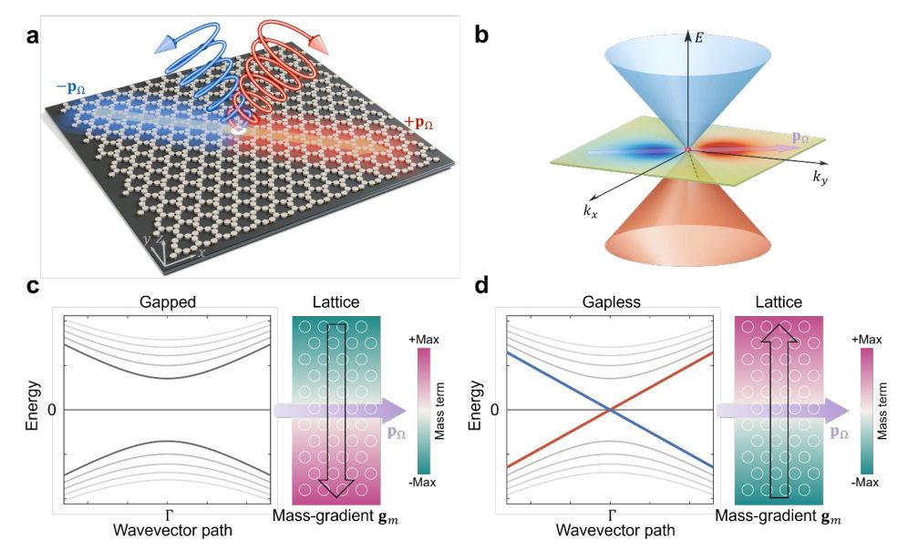
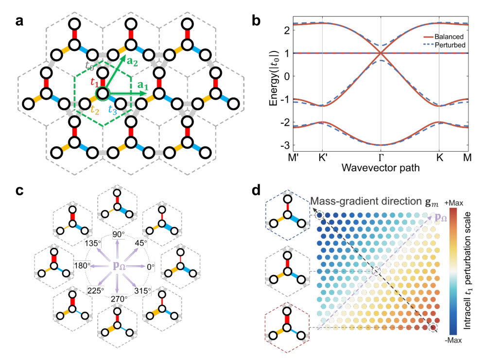
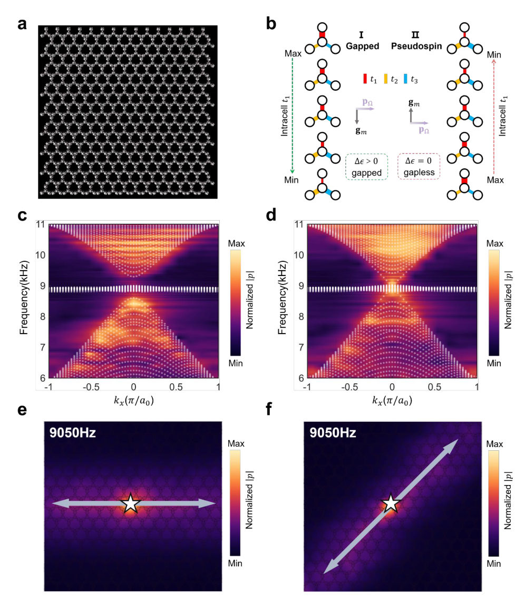
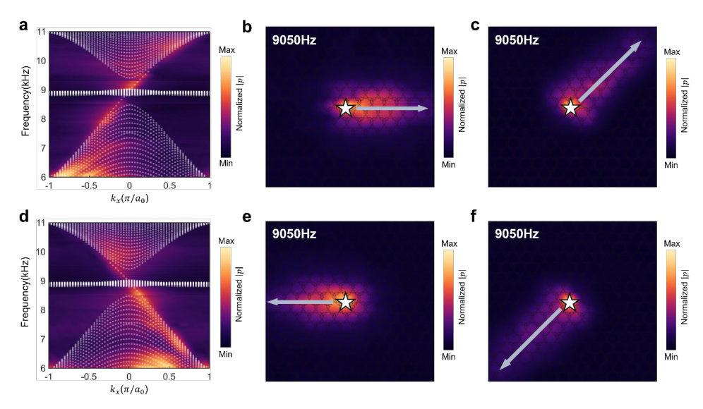
Summary. This paper introduces a novel mechanism where the topological properties of pseudospin-1 Dirac systems govern transport via a geometric matching condition between the Berry-curvature polarity and a real-space mass gradient. By engineering these two components independently in an acoustic lattice, the authors demonstrate the creation of robust, gapless pseudospin Hall waveguiding paths. This work establishes quantum geometric polarity as a versatile tool for reconfigurable wave routing.
Why it may be interesting. The ability to program waveguiding paths by matching momentum-space geometric textures ($\mathbf{p}_\Omega$) with real-space gradients ($\mathbf{g}_m$) offers a general, tunable mechanism for wave manipulation applicable across various physical platforms.
Main problem. The research aims to utilize the topological transport properties of pseudospin-1 Dirac systems in passive, time-reversal-invariant settings to induce and control pseudospin Hall behaviors.
Main result. The authors demonstrate that coupling the in-plane polarity of the Berry curvature ($\mathbf{p}_\Omega$) with a real-space mass gradient ($\mathbf{g}_m$) dictates a geometric selection rule that enables gapless, tunable pseudospin Hall modes.
Method. The study combines theoretical modeling of the low-energy Hamiltonian with experimental realization using acoustic resonators to program and verify the geometric selection rule.
Model / system. The system is based on a pseudospin-1 Dirac Hamiltonian realized in a four-site planar acoustic lattice. The lattice allows independent programming of the Berry-curvature polarity ($\mathbf{p}_\Omega$) via intracell couplings and the spatial mass gradient ($\mathbf{g}_m$) via coupling modulation.
Key observables. Gapless pseudospin Hall modes, directional waveguiding paths, and the pseudospin-momentum locking confirmed by source excitation handedness.
Important parameters / regimes. The geometric matching factor $\chi = (\mathbf{p}_\Omega imes \mathbf{g}_m) \cdot \hat{z}$, which must equal $+1$ for gapless transport.
Assumptions / limitations. The work establishes a strict geometric selection rule by decoupling the control of $\mathbf{p}_\Omega$ (intracell ratios) from $\mathbf{g}_m$ (real-space arrangement).
Figures summary. Figures illustrate the concept of Berry-curvature polarity ($\mathbf{p}_\Omega$) and the resulting spectra based on mass gradient configuration. Subsequent figures detail the four-site lattice structure, showing how couplings control $\mathbf{p}_\Omega$ and $\mathbf{g}_m$, and present experimental acoustic measurements confirming gap closing and directional waveguiding.
Paper structure. The paper first introduces the theoretical framework, identifying the Berry-curvature polarity ($\mathbf{p}_\Omega$) and the geometric selection rule involving the mass gradient ($\mathbf{g}_m$). It then details the lattice engineering to independently control these two components. Finally, it presents experimental acoustic measurements confirming the predicted gapless transport and directional control.
Pseudospin-1 Dirac systems exhibit unique physics distinct from conventional Dirac cones, such as flat-band crossings and non-Abelian characteristics, yet their topological transport properties have remained largely untapped in passive, time-reversal-invariant settings. Here we uncover an in-plane polarity of the Berry-curvature texture in a pseudospin-1 Dirac Hamiltonian, a previously unexplored geometric degree of freedom encoded in the sign-resolved distribution of Berry curvature despite zero net Berry flux, and reveal a new mechanics where Berry curvature induce pseudospin Hall behaviors in a system. We show that the oriented coupling between this momentum-space polarity and a real-space mass gradient governs a geometric selection rule that dictates the emergence of gapless pseudospin Hall modes. By engineering the intracell couplings of a four-site planar lattice, we independently program the Berry-curvature polarity and the spatial mass gradient without altering the host lattice symmetry. Acoustic experiments directly confirm this directional selection rule: reversing the mass gradient closes or reopens the dispersive gap, while pseudospin-selective source excitation launches counterpropagating pseudospin branches along arbitrary prescribed axes. Our work establishes quantum geometric polarity as a versatile tool for reconfigurable wave routing, sensing, and high-capacity quantum applications.
Authors: Konstantin S. Denisov, Igor Žutić
Type: theory · Category: other · PDF: https://arxiv.org/pdf/2610.09035v1
Analysis basis: full PDF text, analyzed in chunks
Topic relevance: Keldysh / 2PI / non-Gaussian methods 2/5 · methods for driven-dissipative 2/5 · analog quantum simulation 1/5 · correlated / nonlocal dissipation 1/5 · driven-dissipative phase transition 1/5 · non-equilibrium universality 1/5 · quantum measurements 1/5 · scars & prethermalization 1/5
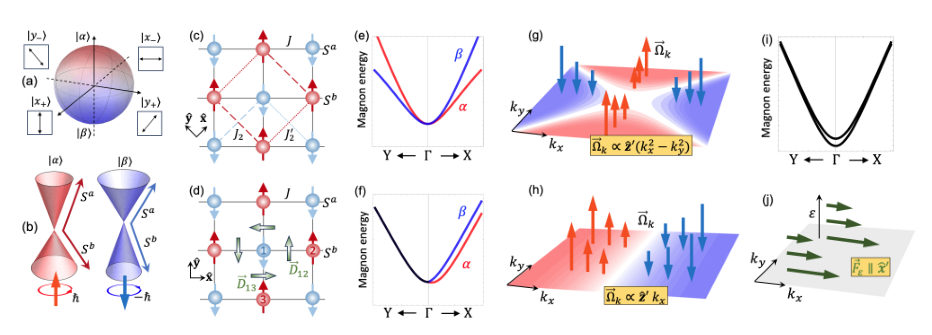
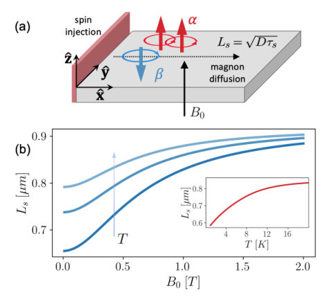
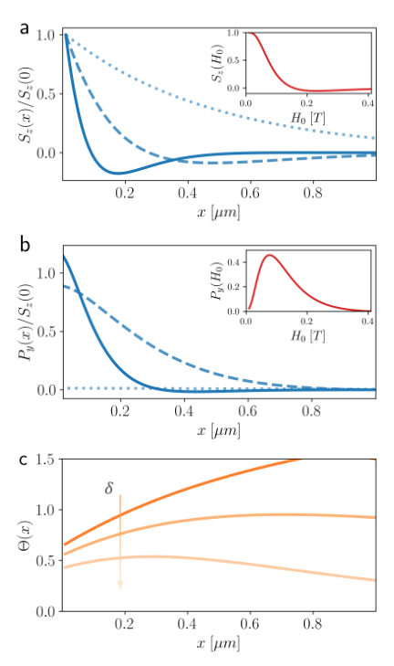
Summary. This work provides a theoretical framework for understanding how magnon polarization textures dictate transport in antiferromagnets and altromagnets. By analyzing the interplay between Larmor precession and relaxation mechanisms, the authors predict field-dependent changes in spin-diffusion length and the Hanle effect. This is crucial for designing spintronic devices based on magnetic excitations.
Why it may be interesting. The detailed treatment of magnon polarization dynamics and the connection to relaxation mechanisms like DP relaxation provides a rich framework for understanding spin transport in magnetic insulators, which shares conceptual overlap with open quantum systems dynamics.
Main problem. The paper theoretically analyzes the magnon polarization textures and subsequent transport mechanisms in antiferromagnets (AFMs) and altromagnets (AMs).
Main result. It demonstrates that the magnon polarization kinetics are governed by two regimes—Dyakonov-Perel relaxation or dephasing due to Larmor precession—and predicts that external fields can suppress relaxation, leading to enhanced spin-diffusion lengths.
Method. The analysis employs theoretical tools including the Holstein-Primakoff transformation, Bogoliubov diagonalization, and Boltzmann kinetic theory applied to the magnon density matrix.
Model / system. The study focuses on collinear AFMs and AMs, modeled using a general magnetic Hamiltonian incorporating exchange, anisotropy, Zeeman, DM, and dipolar interactions. The dynamics are tracked via a pseudospin density matrix.
Key observables. Magnon polarization textures ($\vec{\sigma}_k$), magnon spin-diffusion length, and the Hanle effect signature (suppression of $S_z$ vs. $B_0$).
Important parameters / regimes. The relative strengths of relaxation mechanisms (e.g., $ au_g^{-1}$ vs. $\Gamma_z$), and the external magnetic field $B_0$ relative to characteristic relaxation times.
Assumptions / limitations. The analysis relies on the small canting angle approximation ($ heta_0 \ll 1$) and the semiclassical approximation for the density matrix.
Figures summary. Figures illustrate the Bloch sphere for the magnon pseudospin, the momentum-dependent Larmor frequency vectors ($\vec{\Omega}_k$), and the dependence of ellipticity ($\Theta$) on distance and field.
Paper structure. The paper progresses from deriving the effective magnon Hamiltonian and polarization dynamics to analyzing the kinetic equation for the pseudospin, culminating in the detailed discussion of the Hanle effect and the role of anisotropic DP relaxation.
Antiferromagnets (AFMs) host magnons that can exhibit fully circular, elliptic and linear polarizations of sublattice magnetization dynamics. We analyze theoretically different momentum-space magnon polarization textures and magnon transport in collinear AFMs and altermagnets (AMs). The sensitivity of the polarization texture to a magnon momentum direction determines two regimes of magnon polarization kinetics: The Dyakonov-Perel relaxation or its dephasing due to asynchronous Larmor precession. For an easy-axis AFM, magnetic field parallel to the N{é}el vector leads to the suppression of the magnetic dipolar interaction-induced Dyakonov-Perel relaxation, accompanied by the increase in the magnon spin-diffusion length and its counter-intuitive growth with temperature. For a perpendicular orientation, instead, relaxation of circular polarization of magnons is enhanced due to Larmor precession. Finally, extremely anisotropic relaxation of magnon polarization is predicted for AMs or AFMs having Dzyaloshinskii-Morya interaction.
Authors: Aayushi Agrawal, Jayendra N. Bandyopadhyay
Type: theory · Category: other · PDF: https://arxiv.org/pdf/2610.09925v1
Analysis basis: full PDF text, analyzed in chunks
Topic relevance: analog quantum simulation 2/5 · Frenkel-Kontorova 1/5 · driven-dissipative phase transition 1/5 · methods for driven-dissipative 1/5
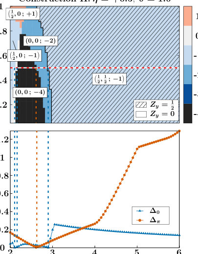
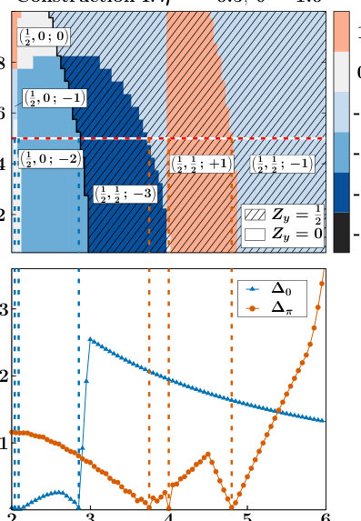
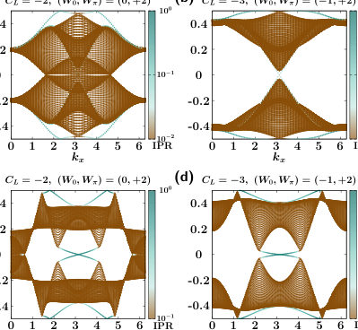
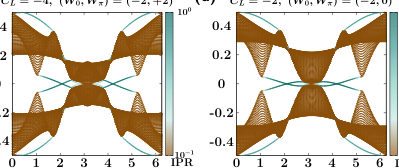
Summary. This paper explores the construction-dependent Floquet topology in stacked SSH chains driven by circular light. By comparing two physically distinct constructions, the authors show that while the static bulk spectrum might be identical, the time-periodic driving reveals different topological signatures via dynamical winding numbers. This highlights that the physical realization of the lattice structure is crucial for understanding driven topological matter.
Why it may be interesting. This work is highly relevant as it demonstrates that subtle details of the physical realization (the 'construction') can dictate the topological properties of a driven system, going beyond what is captured by static invariants like the Chern number.
Main problem. The study investigates how the physical construction of constituent chains affects the Floquet topological properties of a 2D lattice formed by stacking Su-Schrieffer-Heeger (SSH) chains under circular driving.
Main result. The physical construction dictates distinct Floquet topological structures, evidenced by different gap-resolved winding numbers $(W_0, W_\pi)$, even when the static bulk Chern number ($C_L$) remains the same.
Method. The analysis employs the Floquet-Sambe formalism to determine quasienergy spectra and topological invariants, including the Chern number and dynamical winding numbers.
Model / system. The system is an N-stacked SSH chain model subjected to a time-periodic Hamiltonian induced by circular driving, analyzed in the decoupled-chain limit.
Key observables. Lower-band Chern number ($C_L$), directional Zak phases ($Z_x, Z_y$), and dynamical winding numbers ($W_0, W_\pi$).
Important parameters / regimes. Driving frequency ($\Omega$), dimerization ($\eta$), and interchain hopping ($\delta$).
Assumptions / limitations. The analysis assumes the system is in the time-periodic regime and focuses on the $\chi = -1$ driving case.
Figures summary. Figures illustrate the Floquet phase diagrams, showing how different constructions yield distinct topological invariants like $(W_0, W_\pi)$ for the same $C_L$.
Paper structure. The paper first introduces the driven Hamiltonian and then uses the Floquet-Sambe formalism to calculate topological invariants. It compares two distinct constructions (I and II) to demonstrate the construction dependence, culminating in the calculation of gap-resolved winding numbers.
We investigate construction-dependent Floquet topology in a two-dimensional lattice formed by stacking Su-Schrieffer-Heeger (SSH) chains with co-located sublattice orbitals. We present two constructions in the decoupled-chain limit. Construction-I: the constituent SSH chains are topologically trivial with winding number $w=0$. Construction-II: the constituent SSH chains are topologically nontrivial with $w=1$. Although these constructions are unitarily equivalent in the static limit, circular driving distinguishes them because the hopping processes related by the transformation correspond to different physical bond vectors and therefore acquire different Peierls phases. Using the Floquet-Sambe formalism, we determine the quasienergy spectra and phase diagrams in terms of the lower-band Chern number $C_L$ and directional Zak phases $(Z_x,\, Z_y)$. We find distinct Floquet phase structures, including low-frequency phases with $C_L = -3$ and $C_L = -4$ in the two constructions. Since the Chern number does not resolve the topology of the two quasienergy gaps separately, we further calculate the dynamical winding numbers $W_0$ and $W_π$, and verify the corresponding chiral edge states. In particular, at identical driving parameters, both constructions can have the same Chern numbers $C_L=-2$, while their gap-resolved winding numbers are $(W_0,\, W_π)=(0,\,+2)$ and $(-2,\,0)$, respectively. We also calculate the time-averaged optical Hall conductivity and show that $ C_Le^2/h$ determines its dc value for ideal full-band occupation. At the same time, its finite-frequency response contains photon-assisted contributions. Our results demonstrate that the physical construction of the constituent chains, although irrelevant to the static bulk spectrum, can play a decisive role in the Floquet topological structure. We discuss possible experimental realizations of the driven model.
Authors: Sandy Adhitia Ekahana, Aalok Tiwari, Pratik Saud, Aaron Bostwick, Chris Jozwiak, Eli Rotenberg, Jyoti Katoch
Type: both · Category: disordered systems and neural networks · PDF: https://arxiv.org/pdf/2610.10140v1
Analysis basis: full PDF text, analyzed in chunks
Topic relevance: methods for driven-dissipative 2/5 · quantum measurements 2/5 · Keldysh / 2PI / non-Gaussian methods 1/5
Summary. This review surveys the rapidly expanding role of AI and ML in the Angle-Resolved Photoemission Spectroscopy (ARPES) workflow. It details how ML is applied across all stages, from sample preparation to advanced data inversion, highlighting the move toward autonomous, closed-loop experimental systems. The paper stresses the urgent need for standardized, large-scale open datasets to accelerate this progress.
Why it may be interesting. The integration of ML into interpreting complex, high-dimensional spectroscopic data like ARPES spectra is crucial for extracting fundamental electronic structure information, which is relevant to understanding many-body physics and correlated systems.
Main problem. The field requires a comprehensive review and advancement of Artificial Intelligence (AI) and Machine Learning (ML) applications across the entire Angle-Resolved Photoemission Spectroscopy (ARPES) workflow due to the large, multidimensional datasets produced.
Main result. The paper reviews ML applications across the entire ARPES workflow, suggesting a community focus on sharing pretrained models and developing a standardized, large open ARPES dataset repository.
Method. The review systematically examines ML techniques (Deep Learning, PINNs, etc.) applied to various stages of the ARPES process, from sample preparation to data analysis and autonomous control.
Model / system. The primary system is ARPES, which measures the occupied electronic band structure of crystalline materials, generating high-dimensional datasets. The workflow spans sample growth, measurement, and analysis, increasingly aiming for closed-loop, autonomous operation.
Key observables. Electronic band dispersion ($\epsilon_{\mathbf{k}}$), electron self-energy ($\Sigma(\mathbf{k}, \omega)$), and photoemission intensity $I(\mathbf{k}, \omega)$.
Important parameters / regimes. Photon energy ($h u$), binding energy ($E_B$), and momentum ($\mathbf{k}$).
Assumptions / limitations. Current open ARPES databases are small and fragmented compared to large datasets like ImageNet, limiting the scope of ML training.
Figures summary. The figures schematically illustrate the entire ARPES workflow, showing the progression from sample growth through measurement to analysis, emphasizing the closed-loop nature enabled by AI.
Paper structure. The paper is structured as a comprehensive review, first introducing relevant ML methods, then following the physical ARPES workflow stages (sample prep, measurement, analysis) to review existing applications, and concluding with future perspectives on laboratory automation.
Artificial intelligence (AI) is becoming an increasingly useful tool across the experimental sciences, including angle-resolved photoemission spectroscopy (ARPES), which routinely produces large, multidimensional datasets of electronic structure. Recent advances in AI and machine learning (ML) have opened new opportunities across the entire ARPES workflow, from automated sample preparation and real-time data acquisition to post-experiment data analysis and comparison with theoretical calculations. Despite this progress, a comprehensive review of ML applications, their capabilities, and reliability across the different stages of ARPES workflow is still lacking. In this review, we first introduce ML methods that are most relevant to experimentalists working in condensed matter physics and materials science. We then follow the ARPES workflow, reviewing existing ML applications at each step and discussing their advantages, limitations and potential for future development. We also examine the current ARPES data landscape, where several open databases are available but remain relatively small and fragmented compared with large, shared datasets such as ImageNet. Given these limitations, we suggest that the community focus on sharing pretrained models that can be further trained, adapted to specific tasks, and redistributed, while working toward a larger and standardized open ARPES dataset repository. Finally, we discuss our perspectives on the future of AI within the ARPES workflow using a six-level framework of laboratory automation, highlighting the opportunities and challenges in moving toward a fully autonomous, self-driving ARPES laboratory.
Authors: Sher Baz, Hiroyuki Yamase
Type: theory · Category: strongly correlated electrons · PDF: https://arxiv.org/pdf/2610.09799v1
Analysis basis: full PDF text, analyzed in chunks
Topic relevance: Keldysh / 2PI / non-Gaussian methods 2/5
Summary. This theoretical study examines the longitudinal spin susceptibility jump at a superconducting instability within a magnetic phase, extending the model to include uniform bond-charge order. Using mean-field theory, the authors find that while the bond-charge order does not eliminate the jump, it significantly enhances both the susceptibility and the jump magnitude. This confirms the robustness of the jump mechanism tied to the superconducting response in correlated electron systems.
Why it may be interesting. The investigation into field-induced responses and the persistence of singular behavior (the jump) in the presence of multiple competing orders (magnetism, superconductivity, charge order) is highly relevant to understanding complex quantum materials.
Main problem. The study investigates the longitudinal spin susceptibility jump that occurs when superconductivity develops within a magnetic phase, extending previous models by incorporating uniform bond-charge order.
Main result. The jump in the longitudinal spin susceptibility remains robust despite the inclusion of bond-charge order, which quantitatively enhances both the susceptibility and the jump size at the superconducting transition temperature ($T_c$).
Method. The analysis employs mean-field theory (RPA) applied to an effective square-lattice Hamiltonian, calculating the grand-canonical potential and deriving self-consistency equations for the order parameters.
Model / system. The system is modeled using an effective square-lattice Hamiltonian containing kinetic, magnetic, bond-charge, and superconducting interaction terms. It describes correlated-electron systems exhibiting coexistence of magnetic and superconducting orders.
Key observables. Longitudinal spin susceptibility ($\chi_n$), superconducting order parameter ($\Delta_0$), magnetic order parameter ($m$), and bond-charge order ($\chi_b$).
Important parameters / regimes. Superconducting transition temperature ($T_c$), magnetic transition temperature ($T_N$), and the applied magnetic field ($h$).
Assumptions / limitations. The analysis relies on mean-field theory, assumes a uniform bond-charge order ($\chi_x = \chi_y = \chi_b$), and compares results derived from fixed-density versus fixed-chemical-potential ensembles.
Figures summary. Figures illustrate phase diagrams showing how bond order suppresses magnetism and affects $T_N$ and $T_c$, and show the temperature dependence of $\chi_\mu$ comparing results with and without bond order.
Paper structure. The paper builds upon previous work by extending the model Hamiltonian to include bond-charge order. It then calculates the longitudinal spin susceptibility using linear response theory by differentiating the self-consistency equations with respect to the external field $h$, analyzing the resulting jump at $T_c$ and comparing fixed-density vs. fixed-$\mu$ results.
A previous work [H. Yamase and M. Zafur, Phys. Rev. B \textbf{103}, 224527 (2021)] showed that the longitudinal spin susceptibility exhibits a jump when the superconductivity develops continuously inside a magnetic phase. That analysis employed a minimal model containing magnetic and superconducting interactions. However, in correlated-electron systems, both magnetic and bond-charge interactions originate from the same underlying spin-spin exchange interaction. We therefore extend the model by including the uniform bond-charge order to provide a more realistic description of the system. We find that the jump of the longitudinal spin susceptibility remains robust even in the presence of uniform bond-charge order, but the uniform bond-charge order quantitatively enhances the longitudinal spin susceptibility and the size of the jump at $T_c$.
Authors: Rongkun Han, Haohang Cheng, Dahai Wei, Yuan Lu, Jianhua Zhao
Type: both · Category: other · PDF: https://arxiv.org/pdf/2610.09885v1
Analysis basis: full PDF text, analyzed in chunks
Topic relevance: Keldysh / 2PI / non-Gaussian methods 1/5 · analog quantum simulation 1/5 · driven-dissipative phase transition 1/5 · methods for driven-dissipative 1/5 · non-equilibrium universality 1/5 · quantum measurements 1/5 · scars & prethermalization 1/5
Summary. This work investigates magnetization switching in a $ ext{Co}_2 ext{MnGa}/ ext{MnGa}$ synthetic antiferromagnet (SAF) bilayer. The authors demonstrate a novel self-induced switching mechanism where the spin-orbit torque (SOT) generated in the CMG layer first switches the $ ext{MnGa}$ layer, which subsequently forces the reversal of the CMG layer through strong antiferromagnetic coupling. This provides a pathway for highly efficient, current-driven magnetic memory devices.
Why it may be interesting. While primarily in spintronics/condensed matter, the study of coupled magnetic dynamics under non-equilibrium driving forces (SOT) and the resulting complex, sequential switching mechanism has parallels with understanding coupled quantum oscillators or non-linear dynamics in open quantum systems.
Main problem. The study aims to demonstrate and elucidate the self-induced magnetization switching mechanism in a synthetic antiferromagnet (SAF) structure using spin-orbit torque (SOT).
Main result. Self-induced switching is confirmed in the $ ext{Co}_2 ext{MnGa}/ ext{MnGa}$ SAF bilayer, where the SOT from $ ext{Co}_2 ext{MnGa}$ switches $ ext{MnGa}$, which then triggers the reversal of $ ext{Co}_2 ext{MnGa}$ via strong AFM coupling.
Method. The research combines experimental measurements (MBE growth, AHE, AMR, SOT switching) with theoretical modeling using macrospin simulations based on LLG equations.
Model / system. The physical system is a synthetic antiferromagnet (SAF) bilayer composed of $ ext{Co}_2 ext{MnGa}$ (CMG) and $ ext{MnGa}$. The CMG film acts as both the spin current source and a magnetic layer, coupled antiferromagnetically to the $ ext{MnGa}$ layer.
Key observables. Anomalous Hall Conductivity (AHC), magnetization hysteresis loops ($ ext{M-H}$), SOT-driven switching ratios, and magnetization vector trajectories.
Important parameters / regimes. Strong antiferromagnetic exchange coupling, critical current density ($J_c$), and the relative contributions of damping-like ($\chi_{ ext{DL}}$) and field-like ($\chi_{ ext{FL}}$) torques.
Assumptions / limitations. The analysis assumes that the self-induced switching mechanism is dominant, eliminating the need for an external spin current source compared to traditional SAF/HM structures.
Figures summary. Figures show crystal structure, AHE/AMR curves, $ ext{M-H}$ loops for both decoupled and coupled systems, and simulation results detailing the sequential switching trajectories of the two magnetic layers.
Paper structure. The paper progresses from characterizing the intrinsic properties of the CMG layer (large AHC, WSM behavior) to demonstrating SOT switching in a decoupled multilayer, culminating in the crucial observation and simulation of self-induced switching in the coupled SAF bilayer.
The large intrinsic spin current in magnetic Weyl semimetals (WSMs) provides a promising platform for spin-orbit torque (SOT) devices. Here, we demonstrate SOTdriven magnetization switching in a synthetic antiferromagnet (SAF) composed of a Co2MnGa(CMG)/MnGa bilayer. In this heavy metal-free structure, CMG film functions simultaneously as a spin current source and as a magnetic layer. Macrospin simulations confirm the self-induced switching mechanism in the bilayer. The SOT generated by CMG switches the MnGa layer, which in turn triggers the reversal of the CMG layer via strong antiferromagnetic exchange coupling. These results elucidate the spin dynamics in SAFs and provide a new pathway toward SOT devices with selfinduced magnetization switching.
Authors: Pei-Han Lin, Roderich Moessner, Egor I. Kiselev
Type: theory · Category: other · PDF: https://arxiv.org/pdf/2610.10109v1
Analysis basis: full PDF text, analyzed in chunks
Topic relevance: Keldysh / 2PI / non-Gaussian methods 1/5 · analog quantum simulation 1/5 · driven-dissipative phase transition 1/5 · methods for driven-dissipative 1/5
Summary. This paper investigates how time-periodic electromagnetic driving (Floquet engineering) can control the orbital Hall effect and orbital inverse Faraday effect in condensed matter systems. By analyzing systems with constrained momentum space, the authors show that resonant driving enhances the response significantly, allowing for large effects with relatively weak driving fields. The methodology relies on solving the Quantum Boltzmann Equation in the Floquet basis.
Why it may be interesting. This work is highly relevant to AMO/quantum optics as it uses time-periodic driving (Floquet engineering) to control macroscopic quantum responses (Hall effect, magnetization) in solid-state systems, providing a theoretical framework for light-matter interaction control.
Main problem. The study aims to demonstrate that in systems with strong phase-space constraints, the relative impact of a resonant Floquet drive can be significantly enhanced for phenomena like the orbital Hall effect and orbital inverse Faraday effect.
Main result. The resonant drive allows for an order-one relative change in the orbital Hall conductivity even when the drive field is modest, and it induces an orbital inverse Faraday effect controlled by the interband quantum metric.
Method. The analysis employs Floquet engineering techniques, solving the Quantum Boltzmann Equation (QBE) for the density matrix in the presence of a time-periodic electromagnetic drive.
Model / system. The model uses a minimal radial–tangential two-band Hamiltonian, suitable for describing momentum-dependent orbital textures, and is analyzed in the collisionless limit.
Key observables. Orbital Hall Conductivity ($\sigma_{H}^{Lz}$), orbital inverse Faraday effect (static orbital magnetization $m$), and interband coherence.
Important parameters / regimes. The key regime is defined by the phase-space constraint $\Delta k$, and the resonance condition $\varepsilon_+(k_0) - \varepsilon_-(k_0) = \Omega_0$.
Assumptions / limitations. The analysis assumes zero temperature with frozen equilibrium occupations and focuses on the collisionless limit of the QBE.
Figures summary. Figures illustrate band dispersions, the hot region annulus, the setup involving circular drive and DC probe fields, and plots comparing calculated susceptibilities and conductivities against theoretical limits.
Paper structure. The paper systematically derives the effective Floquet Hamiltonian, solves the QBE for the density matrix, and calculates the time-averaged expectation values for the orbital magnetization and conductivities, showing the enhancement mechanism.
Floquet engineering controls material responses via a time-periodic electromagnetic drive. An important task in practise is to reduce the driving strengths required to implement Floquet protocols.We show that in systems with strong phase-space constraints, where the response is dominated by a small region of momentum space, the relative impact of a resonant Floquet drive is enhanced. We demonstrate this idea on the example of the orbital Hall effect, where equilibrium occupations restrict the interband coherence to a narrow momentum interval $\hbarΔk$. The ratio $eE_0/(Ω_0\hbarΔk)$, where $Ω_0$ is the frequency of the drive, is considerable even at modest field amplitudes $E_0$, leading to a large relative change in the orbital Hall conductivity. Due to the non-trivial orbital texture, the circularly polarized drive induces an inverse orbital Faraday effect by magnetizing the electrons. We show that the corresponding susceptibility is controlled by the interband quantum metric that determines the resonant Floquet hybridization.
Authors: A. D. Levin, V. A. Chitta, Z. D. Kvon, N. N. Mikhailov, G. M. Gusev
Type: both · Category: strongly correlated electrons · PDF: https://arxiv.org/pdf/2610.10060v1
Analysis basis: full PDF text, analyzed in chunks
Topic relevance: Keldysh / 2PI / non-Gaussian methods 1/5 · analog quantum simulation 1/5
Summary. This work investigates charge transport in a unique three-component plasma realized in HgTe quantum wells, combining massless Dirac electrons with thermally activated heavy holes. By analyzing the temperature dependence of resistivity, the authors demonstrate that the observed quadratic increase selects for a short-range electron-heavy-hole interaction mechanism. This establishes the material as a key platform for studying interaction-driven transport in mixed-carrier quantum systems.
Why it may be interesting. The study provides a concrete platform for observing interaction-driven transport in a hybrid system combining different types of quantum statistics (degenerate massless vs. non-degenerate massive), which is relevant for understanding strongly correlated behavior in low-dimensional materials.
Main problem. Investigating charge transport in a hybrid three-component plasma system involving massless Dirac carriers and thermally activated heavy holes.
Main result. The observed temperature-dependent resistivity ($ ho \propto T^2$) is attributed to a short-range electron-heavy-hole interaction, contrasting with predictions from unscreened Coulomb interactions.
Method. The analysis uses a non-perturbative, momentum-relaxation-time description of interparticle transport, fitting measured resistivity data to theoretical scaling laws.
Model / system. The system is modeled using a gapless HgTe quantum well hosting three components: degenerate massless Dirac electrons, Dirac holes, and non-degenerate heavy holes. The charge neutrality condition must be satisfied self-consistently.
Key observables. Resistivity ($ ho$) vs. Temperature ($T$), excess resistivity ($\Delta ho$), and carrier densities ($n_d, p_d, p_{HH}$).
Important parameters / regimes. Temperature range ($T \gtrsim 10$ K), heavy-hole density ($p_{HH}$), and the interaction amplitude ($U_0 \approx 90 ext{ eV nm}^2$).
Assumptions / limitations. The analysis assumes the scattering is quasi-elastic and treats the system in the weakly disordered limit, using a minimal effective reference model for the gapless spectrum.
Figures summary. Figures illustrate the energy spectrum, the Density of States (DOS) for the three components, and the temperature evolution of the carrier densities, showing the crossover between different plasma regimes.
Paper structure. The paper develops the physics by first establishing the unique three-component nature of the plasma, then using self-consistent calculations to track carrier populations with temperature, and finally applying kinetic theory to link the observed temperature dependence of resistivity to the specific interaction channel (short-range vs. Coulomb).
Electron--hole plasma in two-dimensional systems has mainly been studied in two limiting cases: degenerate semimetals with parabolic bands and nondegenerate symmetric Dirac systems such as graphene. Here we investigate a different regime realized in a gapless HgTe quantum well: a multicomponent plasma where massless Dirac carriers coexist with thermally activated heavy holes from lateral valence-band valleys. Near charge neutrality, the resistance increases approximately as $T^2$, in sharp contrast to the nearly temperature-independent resistivity expected for a symmetric Dirac plasma. We show that once heavy holes are populated, charge neutrality pins the chemical potential above the Dirac point, leaving the Dirac electrons moderately degenerate while the heavy holes remain nondegenerate and obey Boltzmann statistics. The light electrons therefore scatter almost elastically from the heavy holes, allowing a relaxation-time treatment of interparticle transport. Using carrier densities from self-consistent band-structure calculations, we reproduce the data with a short-range electron--hole interaction in the weakly disordered limit, for which the conductivity scales as $T^{-2}$ and the excess resistivity is proportional to the heavy-hole density. In contrast, an unscreened Coulomb interaction would give a temperature-independent conductivity. The extracted interaction amplitude is of the expected Coulomb scale. These results establish near-critical HgTe quantum wells as a platform for interaction-driven transport in multicomponent systems combining degenerate massless and nondegenerate massive carriers.
Authors: Sidhartha Nayak, Alex Boeglin, Quentin Stein, Katharina Kaiser, Guillaume Schull, Thomas Frederiksen, Tomáš Neuman
Type: theory · Category: other · PDF: https://arxiv.org/pdf/2610.09148v1
Analysis basis: full PDF text, analyzed in chunks
Topic relevance: analog quantum simulation 1/5 · interference shaping light 1/5
Summary. This work theoretically investigates topological properties in excitonic bands within 2D molecular crystals. By calculating the Zak phase, the authors demonstrate that edge states, which possess momentum-locked elliptical polarization, only appear for specific crystallographic boundaries. This establishes a pathway for designing directional optical coupling in molecular materials.
Why it may be interesting. The connection between molecular excitons, topological invariants (Zak phase), and directional optical coupling provides a solid theoretical framework for engineering light-matter interactions in solid-state quantum emitters.
Main problem. The study investigates the topological characteristics and edge states of excitonic bands formed in planar two-dimensional molecular crystals.
Main result. The existence of edge excitons is shown to depend sensitively on the crystallographic boundary orientation and is governed by the Zak phase of the bulk bands, exhibiting momentum-locked elliptical polarization.
Method. The authors employed theoretical modeling using a lattice Hamiltonian, calculating the Berry and Zak phases along paths in the Brillouin zone, and analyzing the resulting band structures.
Model / system. The system is modeled using molecular excitations (e.g., zinc phthalocyanine) in 2D molecular crystals, treated via an excitonic Hamiltonian incorporating un-screened Coulomb interactions.
Key observables. Zak phase ($\gamma_{Zak}$), Berry phase ($\gamma$), momentum-resolved excitonic bands, and elliptical polarization textures.
Important parameters / regimes. Crystallographic termination/orientation, lattice structure (square lattice), and the degeneracy points ($\Gamma$ and $M$) in the Brillouin zone.
Assumptions / limitations. The analysis relies on approximations for the Coulomb integral and neglects vibronic effects; linear dispersion alone is insufficient to confirm Dirac topology when long-range interactions are present.
Figures summary. Figures illustrate the band structure along high-symmetry paths, the calculated Zak phase values for different edge terminations, and the polarization texture of the resulting edge states.
Paper structure. The paper progresses by establishing the model Hamiltonian, calculating the bulk band topology via the Zak phase, demonstrating the emergence of edge states dependent on boundary conditions, and finally characterizing the polarization texture of these topological edge states.
In molecular crystals, molecular excitations can hybridize into collective Frenkel excitons. Here we show that doubly degenerate excitations in planar two-dimensional molecular crystals generate excitonic bands with nontrivial momentum-resolved topological characteristics and edge states appearing only for selected crystallographic terminations. Using a model inspired by aggregates of zinc phthalocyanine molecules deposited on insulating surfaces, we demonstrate that the existence of edge excitons depends sensitively on the crystallographic orientation of the boundary and is governed by the Zak phase of the underlying bulk bands. The resulting edge states exhibit momentum-locked elliptical polarization textures originating from the internal structure of the molecular excitations, potentially enabling directional optical coupling and excitation transport. Our results establish a route toward topological and polarization-textured excitonic states in two-dimensional molecular materials.
Authors: Aiswarya Rath, Kalyan Ghosh, Pratap K Sahoo
Type: both · Category: other · PDF: https://arxiv.org/pdf/2610.10353v1
Analysis basis: full PDF text, analyzed in chunks
Topic relevance: quantum measurements 1/5

Summary. This work demonstrates that oxygen ion irradiation can be used to engineer ZnO nanorods, achieving a reversible 'switching' of excitonic emission. By analyzing the temperature-dependent photoluminescence, the researchers quantified how the ion damage systematically tunes the exciton-phonon coupling strength, paving the way for defect-programmable nanophotonic devices.
Why it may be interesting. The ability to use controlled ion irradiation to engineer specific electronic states (exciton switching) and tune fundamental coupling constants ($a_{ ext{BE}}$) in a solid-state semiconductor is highly relevant for designing quantum emitters and optoelectronic devices.
Main problem. The study aims to dynamically control excitonic states and light-matter interactions in ZnO nanorods by engineering defects using oxygen ion irradiation.
Main result. Oxygen ion irradiation enables a reversible exciton OFF/ON switching mechanism and allows for the systematic tuning of the exciton-phonon coupling strength.
Method. The research combines ion implantation (250 keV O+ irradiation) with structural characterization (FESEM, XRD) and detailed optical spectroscopy (PL, temperature-dependent PL) analyzed using the Bose-Einstein model.
Model / system. The physical system is vertically aligned hexagonal ZnO nanorods. The analysis models exciton-phonon coupling using the Bose-Einstein model, while structural changes are tracked via ion implantation depth profiles and crystal structure analysis.
Key observables. Near-band-edge emission quenching, defect-band emission resonances, $ ext{D}^0 ext{X}$, $ ext{F}{ ext{X}}–1 ext{LO}$, $ ext{F}(0)$).}}–2 ext{LO}$ transitions, exciton-phonon coupling parameter ($a_{ ext{BE}}$), and free-exciton energy ($ ext{Ex
Important parameters / regimes. Ion fluence (up to $5 imes 10^{16}$ ions/cm$^2$), ion energy (250 keV), and temperature (low-temperature PL measurements).
Assumptions / limitations. The exciton-phonon coupling strength variation is governed by a competition among irradiation-induced defects, lattice distortion, and exciton localization.
Figures summary. Figures illustrate the depth profiles of implanted ions and structural disorder (XRD), while PL spectra show the quenching of NBE emission and the temperature evolution of exciton transitions.
Paper structure. The paper follows a progression from establishing the physical system and methodology (ion implantation, structural analysis) to demonstrating the primary phenomenon (exciton switching) and finally quantifying the underlying physics (tunable exciton-phonon coupling via Bose-Einstein fitting).
Self ion doping in ZnO nanorods offers a powerful route to dynamically control excitonic states and light matter interactions. Here, vertically aligned hexagonal ZnO nanorods were irradiated with 250 keV oxygen ions to establish a direct link between irradiation induced defects and excitonic and optical responses. Increasing ion fluence progressively quenches the near band edge emission at 380 nm, leading to a complete exciton OFF state, while thermal annealing restores the emission, yielding a reversible exciton OFF or ON response. This switching originates from defect mediated modification and thermal recovery of excitonic states. The defect band emission, between 400 to 750 nm, exhibits quasi periodic whispering gallery mode like resonances that are progressively suppressed as irradiation alters nanorod geometry and optical confinement. Low-temperature photoluminescence resolves D0X, FX 1LO, and FX 2LO transitions, whose temperature evolution follows the Bose Einstein model. The non-monotonic variation of excition phonon coupling strength reveals a competition among irradiation induced defects, lattice distortion, and exciton localization in determining exciton phonon coupling. These results establish Oxygen ion irradiation as a means to simultaneously engineer excitonic switching, exciton phonon interactions, and optical resonances, providing a pathway toward defect programmable ZnO nanophotonic and optoelectronic devices.
Authors: Xavier R. Advincula, Yair Litman, Jiuyang Shi, Flaviano Della Pia, Christoph Schran, Angelos Michaelides
Type: theory · Category: other · PDF: https://arxiv.org/pdf/2610.09685v1
Analysis basis: full PDF text, analyzed in chunks
Topic relevance: Frenkel-Kontorova 1/5
Summary. This work rigorously benchmarks various Density Functional Theory (DFT) approximations against the Random-Phase Approximation (RPA) for simulating water at solid interfaces like graphene. By analyzing structure, friction, and vibrational spectra, the authors reveal significant discrepancies between models. They propose a scoring framework and identify a small set of reliable functionals for future simulations.
Why it may be interesting. While focused on condensed matter/chemistry, the rigorous benchmarking methodology and the development of a general scoring framework for comparing complex quantum simulations against high-accuracy references are valuable for any field relying on multi-observable model validation.
Main problem. Computational models for water at solid interfaces disagree significantly on fundamental properties like contact angle and friction, and no reliable computational reference exists to resolve this discrepancy.
Main result. The study identifies six specific DFT functionals that provide reliable starting points for modeling graphene-water interfaces, and shows that dynamical/spectroscopic properties are generally harder for DFT to reproduce than structural ones.
Method. The authors compare various DFT exchange-correlation (XC) approximations against the high-accuracy Random-Phase Approximation (RPA) using Machine-Learned Potentials (MLPs) for extensive sampling.
Model / system. The system studied is the solid-liquid interface, specifically water interacting with graphene. The comparison spans a wide range of computational models, including DFT functionals (Hybrids, Meta-GGAs) and the RPA reference.
Key observables. Interfacial structure (density profiles), wettability ($ ho_2/ ho_1$), friction coefficient ($\mu$), and vibrational sum-frequency generation (SFG) spectra descriptors.
Important parameters / regimes. The comparison is benchmarked against the RPA reference level of theory, which is computationally expensive for large simulations.
Assumptions / limitations. The analysis relies on developing a transferable, multi-observable scoring framework to quantify functional agreement with the high-accuracy RPA reference.
Figures summary. Figures compare density profiles, friction coefficients, and vibrational spectral descriptors, showing substantial quantitative deviations ($\pm 45\%$ to $\pm 230\%$) across different XC approximations relative to RPA.
Paper structure. The paper systematically assesses multiple observables (structure, friction, spectroscopy) by comparing various DFT approximations against RPA, culminating in the proposal of a scoring framework to rank functional reliability.
Simulations of water at solid interfaces routinely disagree on basic properties, from contact angle to friction, depending on the model used, whether an empirical force field or a density functional theory (DFT) exchange-correlation (XC) approximation. Yet no accurate computational reference has been available to determine which, if any, is reliable. Here we assess XC approximations spanning the rungs of Jacob's Ladder against the random-phase approximation (RPA) at the graphene-water interface. Using machine-learned potentials (MLPs) trained on both DFT and RPA data, we achieve the extensive sampling required to characterize interfacial structure, wettability, friction, and vibrational sum-frequency generation spectra. We find that XC approximations disagree substantially with RPA and with each other. To make sense of this, we introduce a transferable, multi-observable scoring framework that distills each functional's agreement with RPA into a single measure. Six functionals emerge as reliable starting points for studies of graphene-water and other dispersion-dominated interfaces, namely B3LYP-D3(0), revPBE-D3(0), revPBE-D3(BJ), B97M-rV, r$^{2}$SCAN, and revPBE0-D3(0). Notably, this ranking follows no simple rule based on functional family or rung of Jacob's Ladder. What does hold across functionals is that dynamical and spectroscopic properties tend to be harder for DFT to reproduce than structural ones, with direct consequences for functional selection. Our framework also offers a general strategy for benchmarking any atomistic model, including the new generation of foundational MLPs, against high-accuracy references at solid--liquid interfaces. Beyond simulation, this work identifies which models can be trusted to connect measured contact angles, friction, and vibrational spectra to the molecular structure behind them.
Authors: Jun Lu, Yan Xin, Iain Dixon, Brent Jarvis, Kwangmin Kim, Yu Suetomi, Jeremy Levitan, Jan Jaroszynski, Hongyu Bai
Type: experiment · Category: other · PDF: https://arxiv.org/pdf/2610.09308v1
Analysis basis: full PDF text, analyzed in chunks
Summary. This paper investigates delamination failures in large REBCO superconducting coils used for ultrahigh field magnets. Through extensive testing and postmortem analysis, the authors conclusively demonstrate that these structural failures are caused by electromagnetic stress from transport currents. The findings are crucial for improving the design and reliability of next-generation high-field superconducting magnets.
Why it may be interesting. While focused on materials science, the analysis of failure under extreme, non-equilibrium electromagnetic stress and the development of mitigation strategies for superconducting devices are relevant to understanding material limits in quantum technology infrastructure.
Main problem. The paper addresses the critical issue of delamination in large REBCO coated conductors, which severely limits the design and performance of ultrahigh field superconducting magnets.
Main result. Delamination bubbles observed in large coils are strongly attributed to electromagnetic stress induced by transport and screening currents, a mechanism confirmed via torque magnetometry.
Method. The study combines large-scale magnet testing, postmortem inspection using microscopy, and controlled mechanical testing via torque magnetometry.
Model / system. The physical system involves REBCO coated conductors wound into large-scale coils designed for 40 T magnets. The analysis focuses on the mechanical integrity of the layered structure under high magnetic fields and associated currents.
Key observables. Surface bubbles, degradation of critical current (Ic), crack propagation paths, and sudden drops in measured torque values.
Important parameters / regimes. Operating fields up to 11.4 T (and implied higher fields), measured delamination strengths ($\sim 2.5$ to $3.8$ MPa), and the magnitude of electromagnetic stress.
Assumptions / limitations. The primary assumption is that the observed degradation is directly caused by electromagnetic stress, and that the torque magnetometry setup can accurately reproduce this failure mechanism.
Figures summary. Figures illustrate the physical evidence of delamination, including SEM/TEM cross-sections showing cracks, and torque magnetometry results demonstrating bubble formation and collapse upon chemical removal.
Paper structure. The paper presents findings from testing large coils, detailing the observation of degradation, followed by mechanistic investigation using microscopy and torque magnetometry to prove the link between electromagnetic stress and delamination, concluding with design implications.
REBCO coated conductors have been used in ultrahigh field magnets for condensed matter physics research, nuclear fusion, particle accelerators, and NMR applications. It is well known, however, that they are not mechanically strong against delamination due to their intrinsic layered structures. As a result, the delamination issue has become one of the major design challenges of REBCO magnet coils. As a part of the development of the 40 T all-superconducting magnet at the National High Magnetic Field Laboratory, USA, large-scale coils wound by two-in-hand REBCO conductor with turn-to-turn insulation was designed and tested at 4.2 K in an 11.4 T background magnetic field. We found REBCO degradations within the windings and at the crossover joints during the tests. The postmortem inspection found that the degradation was caused by delamination. The delamination appears on the surface of the conductor as bubbles which were subsequently studied by microscopy. Additionally, a similar bubble was found on a short sample by torque magnetometry. This supports the inference that the delamination bubbles found in coils are due to electromagnetic stress. In this paper, we present these findings. The implication of these findings for future magnet designs and the method of mitigation will be discussed.
← Index · ← Previous · Next →